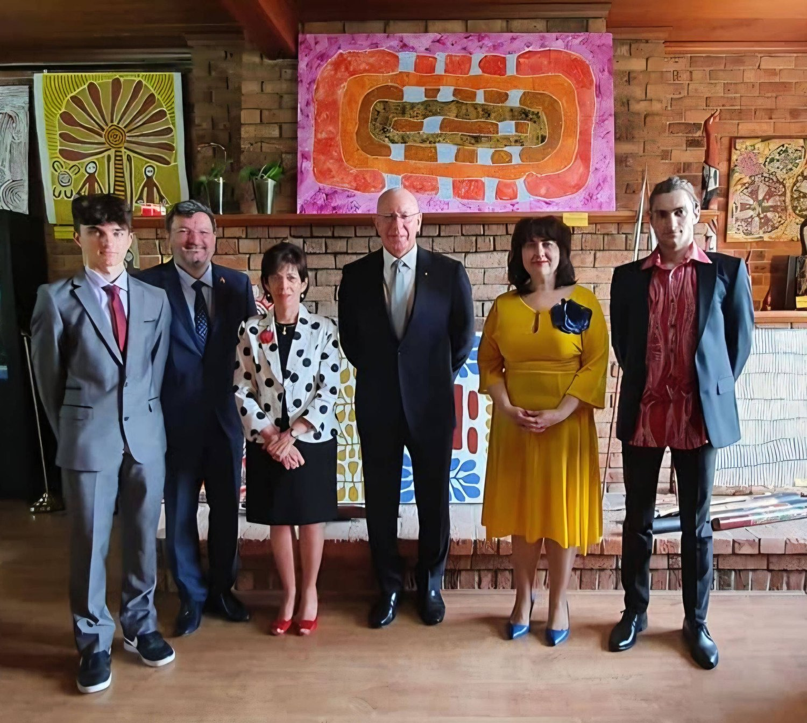

Curatorial note. This essay follows a single canvas — Winnie Reid Nakamarra’s Lupul Rockhole – Eagles Nest (acrylic on linen, 2021) — from the Western Desert to a diplomatic wall. It reads the site through Mircea Eliade’s categories (hierophany, illud tempus, axis mundi), pairs its raptor high-ground with the fire-carrying hawks of the Australian savanna and the eagle of the Prometheus myth, and closes on the painting’s part in an act of cultural diplomacy at the Embassy of Romania in Canberra. The story of the site follows the galleries that catalogue it; the comparative mythology is offered as interpretation, and marked as such. Presented bilingually; use the language selector above for the Romanian edition.Notă curatorială. Acest eseu urmărește o singură pânză — Lupul Rockhole – Eagles Nest de Winnie Reid Nakamarra (acril pe in, 2021) — de la Deșertul de Vest până la un perete diplomatic. Citește locul prin categoriile lui Mircea Eliade (hierofanie, illud tempus, axis mundi), împerechează înălțimea răpitoarelor sale cu ereții purtători de foc din savana australiană și cu vulturul mitului lui Prometeu și se încheie cu rolul picturii într-un act de diplomație culturală la Ambasada României la Canberra. Povestea locului urmează galeriile care îl catalogează; mitologia comparată este oferită drept interpretare și marcată ca atare. Prezentat bilingv; folosiți selectorul de limbă de mai sus pentru ediția în română.
In the Western Desert, land is not a passive expanse of geology but a standing manifestation of the sacred — what Mircea Eliade called a hierophany, the breaking-through of the sacred into ordinary space. A soak, a rockhole, a ridge: each is the visible trace of an ancestral act. To paint such a place is not to describe scenery but to re-sing it — to hold, on a rectangle of linen, a fragment of the law that made the world.
În Deșertul de Vest, pământul nu este o întindere pasivă de geologie, ci o manifestare stătătoare a sacrului — ceea ce Mircea Eliade numea o hierofanie, irumperea sacrului în spațiul obișnuit. O adăpătoare, un izvor de stâncă, o creastă: fiecare este urma vizibilă a unei fapte strămoșești. A picta un asemenea loc nu înseamnă a descrie un peisaj, ci a-l re-cânta — a cuprinde, pe un dreptunghi de in, un fragment din legea care a făcut lumea.
I. The sacred cartography of LupulngaI. Cartografia sacră a Lupulngăi
South of the Kintore (Walungurru) community, in Australia’s Northern Territory, lies Lupul Rockhole — Lupulnga — a permanent store of water in an arid land. Three interwoven Jukurrpa (Dreaming) lines hold the Pintupi law of the place. The Peewee (magpie-lark) Dreaming makes the small bird the custodian of the rockhole: in the illud tempus, the mythical first time, its song sang the stone into being and set the water there for good. The Rainbow Serpent (Wanampi) Dreaming records the passage of the water-and-storm being through Lupul, loosing the thunderstorms that fill the rock cavities and recharge the desert. And the Kungka Kutjarra (Two Women) Dreaming marks the site as a resting place of ancestral travelling women, who paused here for restricted women’s ceremonies — making hair-string skirts — before turning north toward Kaakuratintja (Lake MacDonald).
La sud de comunitatea Kintore (Walungurru), în Teritoriul de Nord al Australiei, se află Lupul Rockhole — Lupulnga — un rezervor permanent de apă într-un ținut arid. Trei linii de vis (Jukurrpa) împletite păstrează legea Pintupi a locului. Visul Peewee (al ciocârliei-coțofană) face din pasărea măruntă custodele izvorului: în illud tempus, timpul mitic dintâi, cântecul ei a cântat piatra spre a fi și a așezat acolo apa pentru totdeauna. Visul Șarpelui-Curcubeu (Wanampi) consemnează trecerea ființei apei și a furtunii prin Lupul, dezlănțuind vijeliile care umplu cavitățile de stâncă și reîncarcă deșertul. Iar Visul Kungka Kutjarra (al Celor Două Femei) însemnează locul drept popas al unor femei strămoșești călătoare, care s-au oprit aici pentru ceremonii de femei, cu acces restrâns — împletind fuste din fir de păr — înainte de a porni spre nord, către Kaakuratintja (Lacul MacDonald).
When Pintupi masters such as Winnie Reid Nakamarra — daughter of the celebrated painter Makinti Napanangka — commit this topography to linen, the pulsing fields of dots and banded lines are not decoration. They are a map: of water rippling out from the rockhole, of the storm-paths of the Serpent, and of the body-paint worn in ceremony. The purple ground and the concentric rings of red, ochre and white are at once an aerial view of the soak and a diagram of the law that keeps it filled.
Când maeștri Pintupi precum Winnie Reid Nakamarra — fiica celebrei pictorițe Makinti Napanangka — așază această topografie pe in, câmpurile pulsatile de puncte și liniile în benzi nu sunt podoabă. Sunt o hartă: a apei care se unduiește dinspre izvor, a drumurilor de furtună ale Șarpelui și a picturii de corp purtate în ceremonie. Fondul purpuriu și inelele concentrice de roșu, ocru și alb sunt deopotrivă o vedere din aer a adăpătoarei și o diagramă a legii care o ține plină.
II. The firehawks of the axis mundiII. Ereții de foc ai lui axis mundi
The site’s inner identity belongs to water and to the Peewee; its settler name, “Eagles Nest,” points to the other pole — a craggy high-point above the rockhole. In Eliade’s vocabulary this high ground is an axis mundi, the vertical pillar that joins the watery underworld of the Rainbow Serpent to the sky. Water lies below; fire and the raptors belong above; the rock between them is the world’s hinge.
Identitatea lăuntrică a locului aparține apei și păsării Peewee; numele dat de coloniști, „Eagles Nest” (Cuibul Vulturilor), arată spre celălalt pol — o înălțime stâncoasă deasupra izvorului. În vocabularul lui Eliade, acest loc înalt este un axis mundi, stâlpul vertical care unește lumea de dedesubt, a apei Șarpelui-Curcubeu, cu cerul. Apa este jos; focul și răpitoarele sunt sus; stânca dintre ele este balamaua lumii.
That verticality is not only mythic. On the Australian savanna it is enacted by raptors — the black kite (Milvus migrans), the whistling kite and the brown falcon — that hunt with fire. As long recorded by Aboriginal people and, in 2017, set down in the peer-reviewed literature, these “firehawks” carry smouldering sticks from a blaze in beak or talon and drop them into unburnt grass, spreading the fire-front to flush out prey. Apart from human beings, they are the only animals known to wield fire deliberately. The Eagles Nest is exactly the kind of overlook from which such birds read a plume of smoke — closing a loop in which the water below and the fire above together govern the desert’s cycles of life and destruction.
Această verticalitate nu este doar mitică. În savana australiană ea este întruchipată de răpitoare — gaia neagră (Milvus migrans), gaia fluierătoare și șoimul brun — care vânează cu foc. Așa cum au consemnat de mult aborigenii și, în 2017, literatura științifică evaluată de specialiști, acești „erete de foc” poartă în cioc sau în gheare bețe mocnind dintr-un incendiu și le lasă să cadă în iarba nearsă, întinzând frontul focului pentru a stârni prada. În afară de om, ele sunt singurele animale despre care se știe că folosesc focul în chip deliberat. „Eagles Nest” este tocmai genul de belvedere de pe care asemenea păsări citesc un fuior de fum — închizând un cerc în care apa de dedesubt și focul de deasupra guvernează împreună ciclurile de viață și de distrugere ale deșertului.
III. The Promethean echoIII. Ecoul prometeic
Set beside Eliade’s comparative method, the fire-raptors of the Eagles Nest rhyme with the founding Western myth of stolen fire. In Hesiod, and in Aeschylus’s Prometheus Bound, the Titan Prometheus steals fire from the gods and hides it in a fennel-stalk to give to humankind; for the theft, Zeus chains him to a crag of the Caucasus, where an eagle tears at his liver each day, and each night it grows whole again. The parallel is not an identity but a structure — and it is offered here as interpretation.
Așezate alături de metoda comparată a lui Eliade, răpitoarele de foc de la „Eagles Nest” rimează cu mitul occidental întemeietor al focului furat. La Hesiod și în Prometeu înlănțuit al lui Eschil, titanul Prometeu fură focul de la zei și îl ascunde într-o tulpină de feniculcă spre a-l dărui omenirii; pentru furt, Zeus îl înlănțuie de o stâncă a Caucazului, unde un vultur îi sfâșie ficatul în fiecare zi, iar noaptea acesta crește la loc. Paralela nu este o identitate, ci o structură — și este oferită aici drept interpretare.
| Classical Greek myth | Australian Dreaming & ecology |
|---|---|
| Prometheus steals fire from the gods | Firehawks snatch fire from wildfires |
| Brings technology and survival to humankind | Spread fire to flush out hidden prey |
| Chained to the high crags of the Caucasus | Watch and nest on the high crags of the Eagles Nest |
| An eagle eternally tears his liver, which regrows | Raptors command the vertical axis mundi of fire |
| Mitul grec clasic | Visul și ecologia australiană |
|---|---|
| Prometeu fură focul de la zei | Ereții de foc smulg focul din incendii |
| Aduce tehnica și supraviețuirea omenirii | Întind focul pentru a stârni prada ascunsă |
| Înlănțuit de stâncile înalte ale Caucazului | Pândesc și cuibăresc pe stâncile înalte de la „Eagles Nest” |
| Un vultur îi sfâșie veșnic ficatul, care crește la loc | Răpitoarele stăpânesc verticalul axis mundi al focului |
In the Greek myth the raptor is the enforcer of a divine monopoly, punishing the thief of fire; in the desert the raptor is the thief itself, a fiery agent of the land. In both, the high nest of the great bird is the theatre where the drama of fire is played out — and the liver, consumed by day and made whole by night, is the same rhythm of destruction and return that Eliade found at the heart of the cosmogonic myth: the world periodically burned and periodically reborn.
În mitul grec, răpitoarea este executorul unui monopol divin, pedepsind hoțul focului; în deșert, răpitoarea este ea însăși hoțul, un agent de foc al ținutului. În ambele, cuibul înalt al păsării mari este teatrul în care se joacă drama focului — iar ficatul, mistuit ziua și refăcut noaptea, este același ritm al distrugerii și al reîntoarcerii pe care Eliade îl afla în inima mitului cosmogonic: lumea periodic arsă și periodic renăscută.
IV. From sacred site to sovereign spaceIV. De la locul sacru la spațiul suveran
The last turn of this story carries the rockhole out of the desert and onto a diplomatic wall. The collection’s Aboriginal works — Lupul Rockhole – Eagles Nest among them — hung at the Embassy of Romania in Canberra, and there, as documented by Ambassador Nineta Bărbulescu, they framed a moment of cultural diplomacy: the farewell visit of the Governor-General of Australia, General David Hurley, and Mrs Linda Hurley, to the Romanian mission.
Ultima cotitură a acestei povești scoate izvorul din deșert și îl duce pe un perete diplomatic. Lucrările aborigene ale colecției — între ele Lupul Rockhole – Eagles Nest — au atârnat la Ambasada României la Canberra, iar acolo, așa cum a consemnat ambasadoarea Nineta Bărbulescu, au încadrat un moment de diplomație culturală: vizita de rămas-bun a guvernatorului general al Australiei, generalul David Hurley, și a doamnei Linda Hurley, la misiunea românească.

To hang a Pintupi water Dreaming on the wall of a sovereign European mission is, in Eliade’s terms, to open a sacred centre inside a diplomatic interior. The canvas turned a formal room into a meeting-ground of two distant traditions and let an ancient Australian story speak as a universal language — the same conviction that animates the wider PacificaRomania collection, where Pacific and Southeast Asian art is read across cultures rather than kept behind glass.
A atârna un vis al apei Pintupi pe peretele unei misiuni europene suverane înseamnă, în termenii lui Eliade, a deschide un centru sacru înăuntrul unui interior diplomatic. Pânza a preschimbat o încăpere oficială într-un loc de întâlnire a două tradiții îndepărtate și a lăsat o poveste australiană străveche să vorbească drept limbă universală — aceeași convingere care însuflețește întreaga colecție PacificaRomania, unde arta Pacificului și a Asiei de Sud-Est este citită între culturi, nu ținută după sticlă.
A note on synchrony. Governor-General David Hurley and Mrs Linda Hurley visited the PacificaRomania exhibition at the Embassy of Romania in November 2020, hosted by Ambassador Nineta Bărbulescu — some weeks before the Australian national anthem was amended, its opening line changing from “young and free” to “one and free” on 1 January 2021. It should be said plainly: there is no evidence the visit influenced that change, and none is claimed here. The amendment was driven entirely by domestic movements — the long advocacy of Indigenous groups, the Recognition in Anthem Project, and a bipartisan consensus to better honour Australia’s 65,000-year First Nations history — and the Governor-General’s part was to enact it formally, on the advice of Prime Minister Scott Morrison and the Federal Executive Council, not on any private inspiration. What remains is a coincidence of dates, not of causes: the collection happened to hang on the continent’s own walls at the moment the continent was re-choosing a word about its own antiquity. If the PacificaRomania project has a recurring motif, it is this quiet synchrony with the places it inhabits — a resonance, never a hand on the wheel.O notă despre sincronie. Guvernatorul general David Hurley și doamna Linda Hurley au vizitat expoziția PacificaRomania la Ambasada României în noiembrie 2020, găzduiți de ambasadoarea Nineta Bărbulescu — cu câteva săptămâni înainte ca imnul național al Australiei să fie modificat, versul său de deschidere schimbându-se din „young and free” (tineri și liberi) în „one and free” (uniți și liberi), la 1 ianuarie 2021. Trebuie spus limpede: nu există nicio dovadă că vizita ar fi influențat acea schimbare și nici nu se pretinde așa ceva aici. Modificarea a fost determinată în întregime de mișcări interne — îndelungata pledoarie a grupurilor indigene, proiectul Recognition in Anthem și un consens bipartizan pentru a cinsti mai bine istoria de 65.000 de ani a Primelor Națiuni ale Australiei — iar rolul guvernatorului general a fost să o promulge formal, la sfatul prim-ministrului Scott Morrison și al Consiliului Executiv Federal, nu dintr-o inspirație personală. Rămâne o coincidență de date, nu de cauze: colecția s-a întâmplat să atârne pe înșiși pereții continentului tocmai când continentul își re-alegea un cuvânt despre propria vechime. Dacă proiectul PacificaRomania are un laitmotiv, acesta este tocmai această sincronie discretă cu locurile pe care le locuiește — o rezonanță, niciodată o mână pe cârmă.
ConclusionConcluzie
Between the rockhole and the raptor, between water and fire, Lupul Rockhole – Eagles Nest holds a whole cosmology on a single field of linen. Read through Eliade, its vertical axis — life-giving water below, fire-bearing birds above — is the same structure that the West preserved in the myth of Prometheus and his eagle. That the same canvas could later stand for friendship between Australia and Romania is not a departure from its meaning but its fulfilment: a made place, rightly tended, that binds distant worlds.
Între izvor și răpitoare, între apă și foc, Lupul Rockhole – Eagles Nest cuprinde o întreagă cosmologie pe un singur câmp de in. Citit prin Eliade, axul său vertical — apa dătătoare de viață jos, păsările purtătoare de foc sus — este aceeași structură pe care Occidentul a păstrat-o în mitul lui Prometeu și al vulturului său. Că aceeași pânză a putut sta mai târziu drept semn de prietenie între Australia și România nu este o abatere de la sensul ei, ci împlinirea lui: un loc făcut, îngrijit cum se cuvine, care leagă lumi îndepărtate.
Notes & sourcesNote și surse
- The site & its Dreamings. Lupul Rockhole (Lupulnga) lies south of Kintore (Walungurru), Northern Territory, on Pintupi country; the Peewee (magpie-lark), Rainbow Serpent (Wanampi) and Kungka Kutjarra (Two Women) Dreamings follow the accounts published by the galleries that catalogue the artist’s work (Honey Ant Gallery; Yubu Napa).Locul și visele sale. Lupul Rockhole (Lupulnga) se află la sud de Kintore (Walungurru), Teritoriul de Nord, pe pământ Pintupi; visele Peewee (ciocârlia-coțofană), Șarpele-Curcubeu (Wanampi) și Kungka Kutjarra (Cele Două Femei) urmează relatările publicate de galeriile care catalogează lucrările artistei (Honey Ant Gallery; Yubu Napa).
- The artist. Winnie Reid Nakamarra, a Pintupi painter of the Western Desert, is a daughter of the celebrated artist Makinti Napanangka (c.1930–2011).Artista. Winnie Reid Nakamarra, pictoriță Pintupi din Deșertul de Vest, este fiica celebrei artiste Makinti Napanangka (c.1930–2011).
- Firehawks. Mark Bonta, Robert Gosford, Dick Eussen et al., “Intentional Fire-Spreading by ‘Firehawk’ Raptors in Northern Australia,” Journal of Ethnobiology 37, no. 4 (2017); the behaviour, long known to Aboriginal people, involves the black kite, whistling kite and brown falcon, and has since been popularised by BBC Earth.Ereții de foc. Mark Bonta, Robert Gosford, Dick Eussen și alții, „Intentional Fire-Spreading by ‘Firehawk’ Raptors in Northern Australia”, Journal of Ethnobiology 37, nr. 4 (2017); comportamentul, cunoscut de mult aborigenilor, implică gaia neagră, gaia fluierătoare și șoimul brun și a fost popularizat între timp de BBC Earth.
- Prometheus. Hesiod, Theogony and Works and Days; Aeschylus, Prometheus Bound. The pairing with the firehawks is interpretive.Prometeu. Hesiod, Theogonia și Munci și zile; Eschil, Prometeu înlănțuit. Împerecherea cu ereții de foc este interpretativă.
- Eliade. Hierophany, illud tempus, the axis mundi and the eternal return follow M. Eliade, Patterns in Comparative Religion (1949), The Myth of the Eternal Return (1949) and The Sacred and the Profane (1957); the comparisons offered here are interpretive.Eliade. Hierofania, illud tempus, axis mundi și eterna reîntoarcere urmează M. Eliade, Tratat de istorie a religiilor (1949), Mitul eternei reîntoarceri (1949) și Sacrul și profanul (1957); comparațiile propuse aici sunt interpretative.
- Cultural diplomacy. The farewell visit of the Governor-General of Australia, General David Hurley, and Mrs Linda Hurley, to the Embassy of Romania in Canberra, hosted by Ambassador H.E. Nineta Bărbulescu, was documented on the ambassador’s Facebook; the Lupul Rockhole – Eagles Nest canvas hung on the embassy wall.Diplomație culturală. Vizita de rămas-bun a guvernatorului general al Australiei, generalul David Hurley, și a doamnei Linda Hurley, la Ambasada României la Canberra, găzduită de ambasadoarea E.S. Nineta Bărbulescu, a fost consemnată pe pagina de Facebook a ambasadoarei; pânza Lupul Rockhole – Eagles Nest a atârnat pe peretele ambasadei.
- The national anthem. The second line of Advance Australia Fair was amended from “For we are young and free” to “For we are one and free,” announced by Prime Minister Scott Morrison on 31 December 2020 and effective 1 January 2021, and proclaimed by the Governor-General on the advice of the Federal Executive Council. The change followed years of advocacy, including the Recognition in Anthem Project, to acknowledge Australia’s First Nations history; no link to the collection’s November 2020 embassy exhibition is claimed or implied.Imnul național. Al doilea vers din Advance Australia Fair a fost modificat din “For we are young and free” în “For we are one and free”, anunțat de prim-ministrul Scott Morrison la 31 decembrie 2020 și intrat în vigoare la 1 ianuarie 2021, și promulgat de guvernatorul general la sfatul Consiliului Executiv Federal. Schimbarea a urmat ani de pledoarie, inclusiv proiectul Recognition in Anthem, pentru a recunoaște istoria Primelor Națiuni ale Australiei; nu se pretinde și nu se sugerează nicio legătură cu expoziția colecției de la ambasadă din noiembrie 2020.
- Provenance. Winnie Reid Nakamarra, Lupul Rockhole – Eagles Nest, acrylic on linen, 2021, 109 × 181 cm; acquired online from Australia and shipped to Malaysia. PacificaRomania collection. Related works: Plume Gallery, Albert Park and a GFL Fine Art auction record.Proveniență. Winnie Reid Nakamarra, Lupul Rockhole – Eagles Nest, acril pe in, 2021, 109 × 181 cm; achiziționată online din Australia și expediată în Malaysia. Colecția PacificaRomania. Lucrări înrudite: Plume Gallery, Albert Park și o înregistrare de licitație GFL Fine Art.